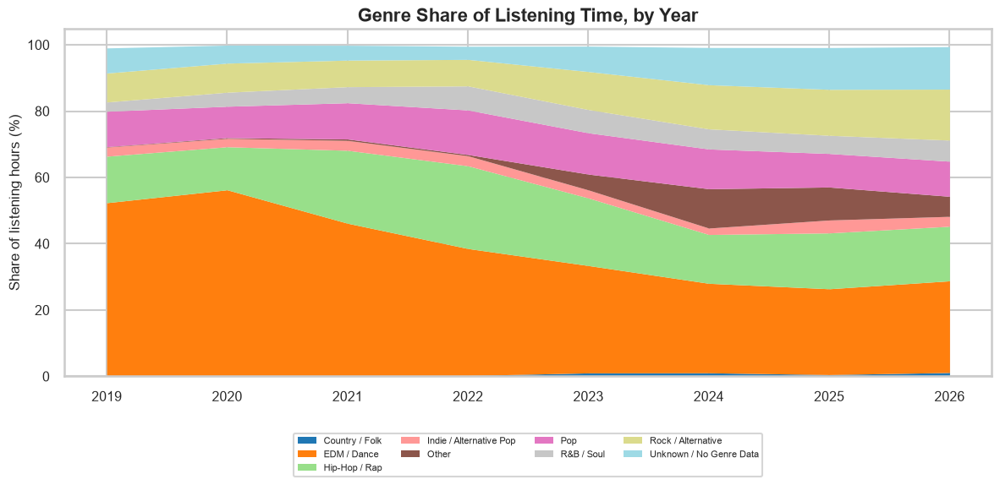
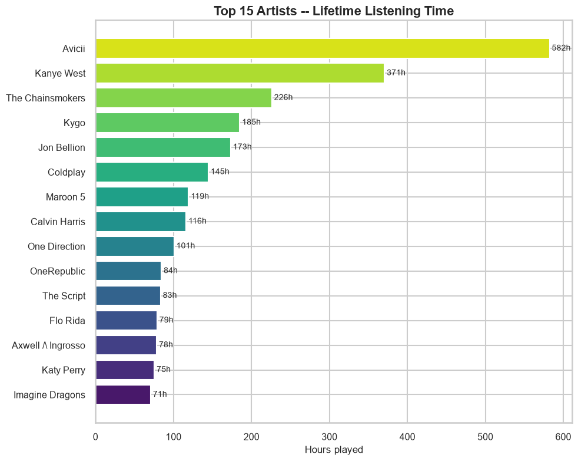
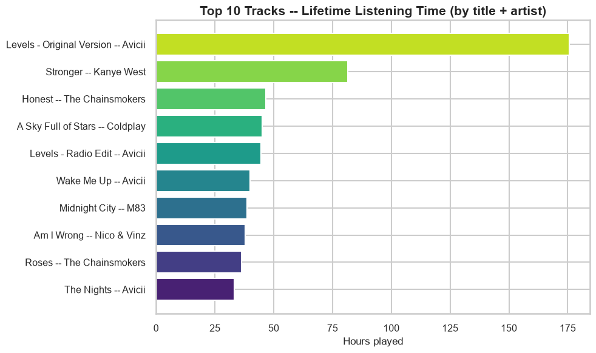
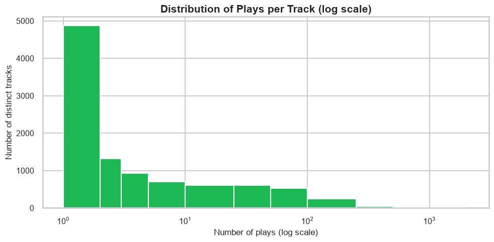
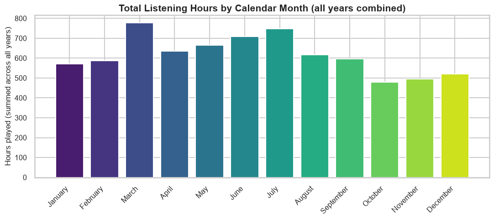
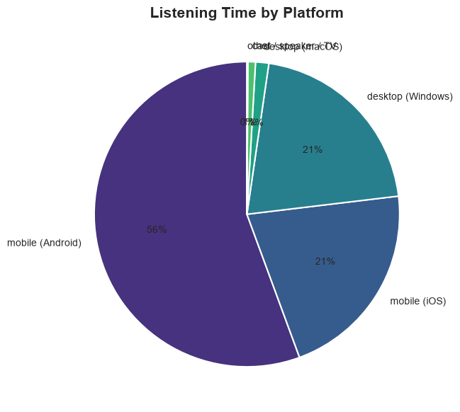
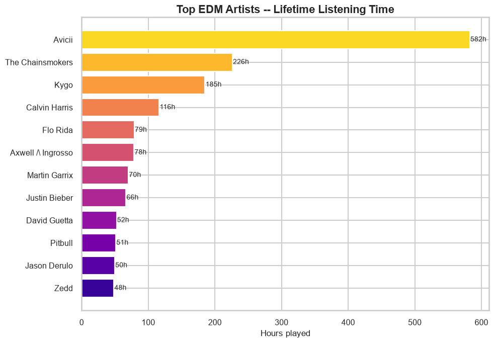
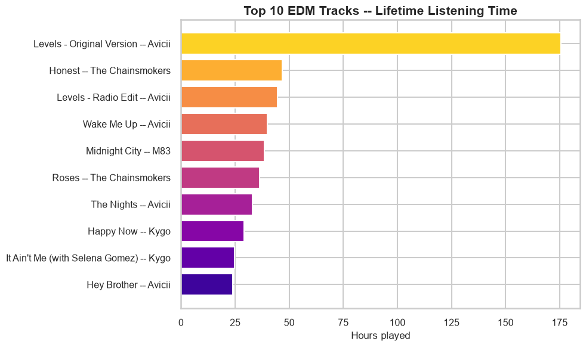
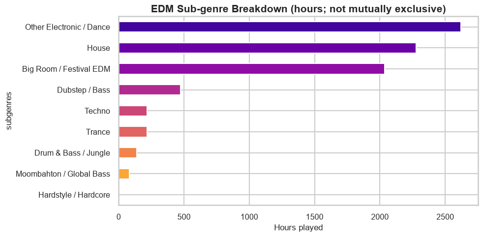
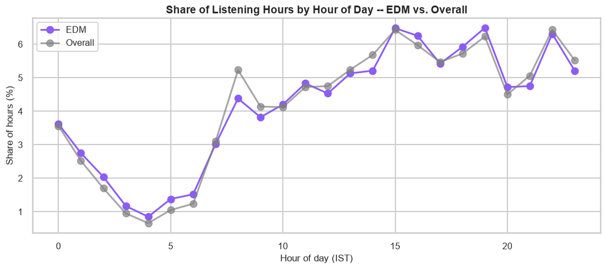

Case Study
Beyond Wrapped: 7.5 Years of My Own Spotify Data
Every December, Spotify Wrapped hands you a few shareable charts and calls it a year in review. I wanted the real version: every play going back to when I first started using the platform, not the highlight reel. So I pulled my own Extended Streaming History, Spotify's full data export rather than the marketing one, and built a project around it: 7,398.8 hours of filtered listening (7,504 hours before I drop anything under 30 seconds), 2,577 artists, and 9,859 distinct tracks, spanning February 2019 through early September this year.
One rule going in: I like EDM, it's probably my favorite genre, and I didn't want that to be the reason this analysis exists. So the project starts with genre trends, artist trends, how long I actually listen to a given song, and how my listening changes across the calendar year. EDM only gets its own section once the data itself says it's earned one. Every chart and number below comes from a single notebook that runs top to bottom in under five seconds and never touches a live API — it loads the same cached data the rest of this project already produced.
Where my taste actually moved
EDM was over half of everything I listened to in 2019 and 2020 (52.4% and 56.2%), and it's been the single largest genre bucket in every year of this dataset without exception. But "largest every year" isn't the same as "unchanged": by 2025, the most recent full year, it had settled to 25.9%, roughly half its early peak. Hip-Hop/Rap moved the other way, climbing from 14.0% in 2019 to a peak of 24.9% in 2022, and it's still elevated at 16.8% in 2025. Rock/Alternative grew slowly and steadily the whole time, from 8.7% up to 13.9% by 2025, its highest full-year share yet. The partial year so far in 2026 (data through early September) continues that same shape: EDM 27.7%, Hip-Hop 16.5%, Rock 15.4%. None of this shows up on a Wrapped card. It only shows up when you look at the whole span at once.

Artist trends: not just a lifetime ranking
Avicii's lifetime lead is commanding: 582.3 hours across 9,858 plays, ahead of Kanye West in second place (370.6 hours) and more than double third-place The Chainsmokers (226.0 hours). But that lifetime number hides a real back-and-forth once you break it out by year. Avicii is the top artist in 2019, 2020, 2021, and again in 2024. Kanye West takes over in 2022 and 2023, then again in 2025 and, so far, 2026. The margins vary a lot too: Avicii's 2020 lead over Kygo (118 hours to 36) is the widest gap of any year in the dataset, while 2023 (Kanye at 82 hours, Avicii at 78) is close enough to be a coin flip.

How long I actually listen to a song
Across every play that clears my 30-second cutoff, the average length is 190 seconds, about 3.2 minutes, with the median close behind at 200 seconds. That's close to a full track, not a quick skim.
Concentration at the track level looks nothing like concentration at the artist level. My top 10 artists alone account for 28.4% of all listening hours, and my top 100 for 67.8%. My top 10 tracks, by contrast, account for only 7.2%, and my top 100 tracks, out of 9,859 total, add up to just 25.6%. I clearly have favorite artists, but not a small set of favorite songs I loop obsessively — I go deep into an artist's catalog rather than replaying one or two hits.
The other side of that same picture: 49.4% of all distinct tracks, 4,869 of 9,859, were played exactly once. The median track was played twice. The single most-replayed track in the whole history is "Levels - Original Version" by Avicii, at 2,098 plays, nearly triple anything else.


Counting tracks honestly turned out to be less obvious than it sounds. Grouped by title and artist, "Stronger" by Kanye West totals 81.5 hours, matching the project's existing numbers. Grouped instead by Spotify's own track ID, the single largest version of "Stronger" accounts for only 60.7 hours, because several distinct catalog entries (different masters or re-releases, most likely) share that title and artist. Both numbers are real; they answer slightly different questions. The project's unique-track count of 9,859 uses the track-ID version, for consistency with the rest of the analysis.
Does my listening change with the seasons?
I'd never actually checked whether my listening changes with the calendar, independent of which year it was. It does, and not by a small amount: March (10.5% of all hours), July (10.1%), and June (9.6%) are consistently the highest months, while October (6.5%) and November (6.7%) are consistently the lowest. Because a single year, 2022, holds more than a quarter of all lifetime hours, I re-ran the comparison with 2022 removed entirely, to make sure that one year wasn't driving the whole pattern. It wasn't: July, June, and March are still the top three months with 2022 excluded, and the highest month is still about 1.93 times the lowest. Whatever is behind it, weather, school or work calendars, some yearly rhythm I'm not consciously aware of, it's a real recurring pattern, not a one-year artifact.

The habits underneath the numbers
On 2,705 of the 2,750 days in this date range, 98.4%, I played at least one song. The longest unbroken run is 589 consecutive days, from May 2021 to December 2022. The longest I've ever gone without playing anything is 4 days, back in November 2019.
Grouping plays into sessions (a new session starts after a 30-minute gap) gives 14,572 sessions total, a median of 6 tracks and 24 minutes each. The longest single session ran 538 minutes, nearly 9 hours, on April 25, 2022: 112 tracks, though gaps inside that span mean I was actually playing music for about 6.5 of those hours. The single busiest day in the whole history is May 12, 2022, at just under 14 hours of listening. Three independent measures of "a lot of listening" (longest streak, longest session, busiest day) all land within the same few months of 2022 without my having gone looking for that.
Spotify's own "skipped" flag is set on 22.6% of plays overall, and 40.7% of plays end before my 30-second cutoff. The skip flag is oddly flat at 0% for 2019 through 2021 before jumping to real values from 2022 onward, which reads much more like Spotify not populating that field in earlier exports than three years of never skipping a single track. For anything before 2022, the cut-short rate is the more trustworthy of the two.
In most years, over 90% of plays are artists I already knew. 2019 shows 100% new-artist plays, but only because it's the first year in the dataset, so every artist is new by definition that year. 2022, the busiest year by far, is actually the year with the least discovery of all (3.3% of plays), even though it still introduced over a thousand tracks I hadn't played before, almost all from artists already in heavy rotation. I don't really go looking for new artists. I go deeper into the ones I already have.
Android is comfortably my primary way of listening (4,116 hours), with iOS (1,577 hours) and Windows desktop (1,541 hours) well behind, and macOS, casting, and everything else barely registering.

Why EDM, specifically
None of the above was arranged to set up EDM. It earns this section because the genre-trends numbers put it there on their own: it's the single largest genre bucket in every year of this dataset, from a high of 56.2% in 2020 down to roughly a quarter of listening in the most recent full years. That is the actual justification for a deep dive, not that it happens to be my favorite genre.
The EDM deep dive
Within EDM, Avicii is again the dominant artist (582.3 hours), followed by The Chainsmokers (226.0), Kygo (184.9), Calvin Harris (116.1), and Flo Rida (78.8). By sub-genre, a broad "Other Electronic/Dance" bucket leads (2,621 hours), close to House (2,275 hours) and Big Room/Festival EDM (2,036 hours); Techno, Trance, Drum & Bass, and Moombahton are all present but comparatively minor.



Compared to my listening overall, EDM behaves differently in two specific ways. It's more concentrated in favorites: my top 5 EDM artists account for 43.9% of all EDM hours, against 20.8% for my top 5 artists overall. And it gets skipped less often: a 16.7% skip rate within EDM against 22.6% overall. Time of day shows no real difference: EDM's three busiest hours (7pm, 3pm, 10pm) are the same three hours as my overall listening, just in a different order.

One more check worth including: genre data is missing for about 7.8% of listening hours, artists MusicBrainz couldn't resolve or tag, and it was worth ruling out that EDM was hiding disproportionately in that gap. A random sample of the unresolved artists came back 15.8% EDM, well below the 32.9% EDM share among artists that are resolved. If the lifetime 36.6% EDM figure is off at all, it understates EDM rather than inflating it.
Getting the genre data right
Spotify's export doesn't include genre at all, and the obvious source, its own Web API, turned out to be a dead end: the developer app I'd registered was stuck in Spotify's most restricted access tier, so every artist came back with zero genre tags, mainstream acts included, no matter how long I waited out what looked like a rate limit. I rebuilt genre resolution from scratch around MusicBrainz instead, an open public database with no login and a simple, documented rate limit.
That switch came with its own problem: MusicBrainz's tags are community-submitted, not algorithmic, so they're noisier. Early on, a couple of stray "house" tags on Kanye West's profile were enough to classify him as EDM ahead of his ten-plus genuine hip-hop tags, until I caught it by checking why a specific high-impact artist had landed where it had, rather than just trusting the aggregate number. Switching to a plurality vote across an artist's full tag list, instead of "first match wins," fixed it.
In the end, 1,712 of 2,577 artists resolved via MusicBrainz, covering 99.6% of total listening hours, and 1,137 of those came back with a usable genre tag, covering 92.2% of total listening hours. The remaining 7.8% resolves to an artist but comes back with no tag at all.
What I didn't force
I also looked at whether my listening skews toward new releases or older catalog material, using each track's original release year. I dropped it. MusicBrainz routinely returns a dozen versions of the same track, remasters, reissues, deluxe editions, all tied at the same relevance score with release dates a decade or more apart; a plain search for "Levels" came back six years off from its actual 2011 release. There wasn't a reliable way around that short of a much bigger undertaking, so I reported the attempt and the reason it didn't work instead of publishing a number I didn't trust.
What's next
This covers the analysis in full: genre and artist trends, how deep I go into a song versus an artist, how the calendar shapes what I listen to, the habits underneath it, and EDM's place in all of it once the data pointed there on its own. The next phase is turning it into an interactive Tableau dashboard, built from the row-per-play export this project already produces, so these findings are something to click through rather than just read.